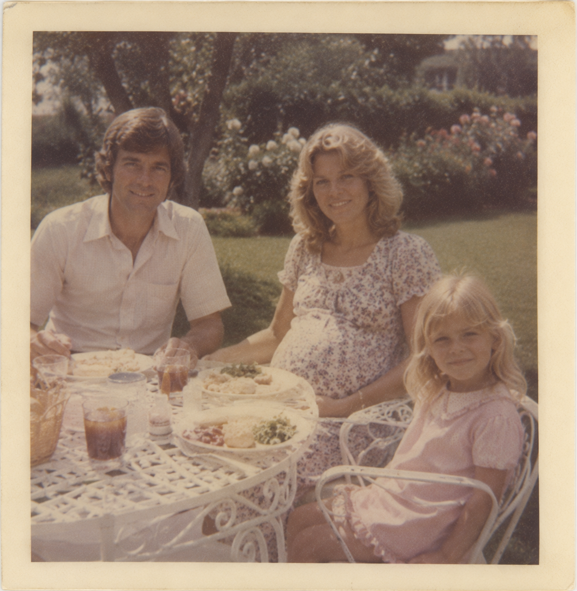
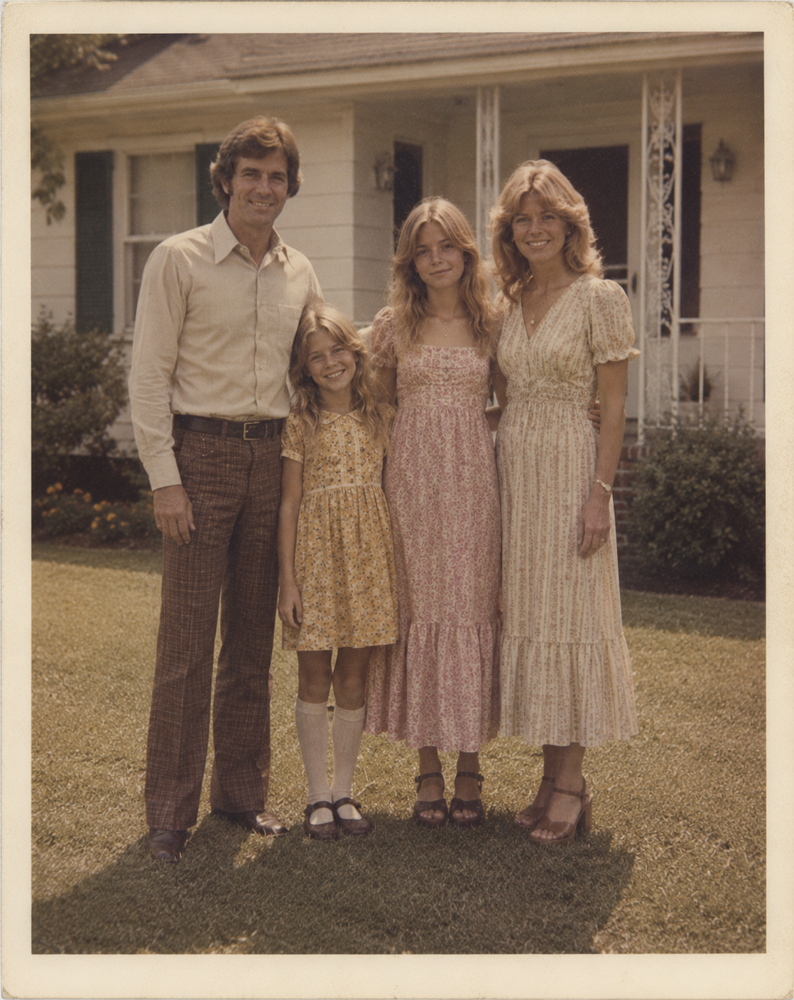
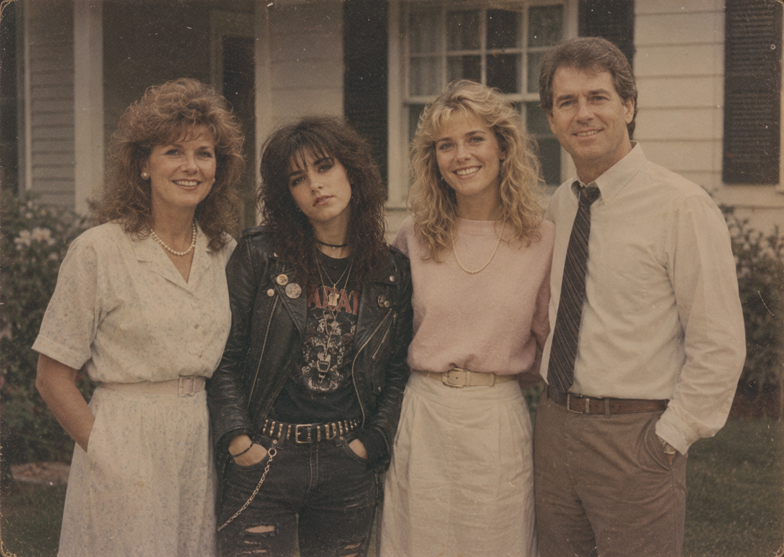

Who are we?
This archive was created by the parents of Abigale as a way of preserving the memories, objects, and moments that shaped our family over the years. Through these materials, we hope to tell her story from our perspective — not only who she became, but also how her transformation affected the people around her.
Parenthood is never simple, and neither was our relationship with Abigale. Looking back through these photographs, belongings, and records has allowed us to reflect on the distance that slowly grew within our family, but also on the joy, individuality, and strength that defined her throughout her life.
Although we did not always understand or agree with the choices she made, this archive became a way for us to remember the daughter we raised and the woman she eventually became.



Our family
Like many families, we once imagined a simple and stable future for ourselves. In the beginning, we believed we had built the ideal American family life — Sunday mornings at church, steady jobs, a loving home, and two beautiful daughters growing up side by side.
As the years passed, however, our family began to change in ways we never expected. Abigale’s growth into her own person challenged many of the values and expectations we had always held onto. There were moments of disagreement, distance, and confusion, and at times it felt as though our family was slowly being reshaped before our eyes.
Holding our family together required patience, compromise, and above all, love. Looking back now, despite the difficulties we faced, we would not erase any part of it. In many ways, this journey taught us that faith and family are often tested in the most unexpected ways.
Abigale’s story
Abigale was born on August 26th, 1965, our second daughter. From the very beginning, she had a kind and gentle nature. As a child, she was deeply attached to animals and was always trying to rescue or care for them whenever she could. She did well in school, surrounded herself with many friends, and brought a great sense of energy into our home.
More than anything, however, Abigale always loved music. What began as small songs sung around the house as a toddler slowly grew into something much larger. She wanted to sing, then to learn guitar, and eventually spent entire afternoons in her room listening to music and replaying songs on her cassette player.
As the years passed, especially entering the 1980s, something in her began to shift. Around the age of sixteen, her appearance and behaviour slowly started to change. She dressed differently, stayed out late with friends, and became more distant from the version of her we thought we knew.
How it ended
For a long time, we believed we had lost our daughter. The years that followed were filled with tension, arguments, and misunderstanding. Yet with time, faith, and patience, we slowly learned that loving someone also means accepting the parts of them you cannot control. No matter how much she changed, she remained our daughter, and in many ways, she always will be our little girl.